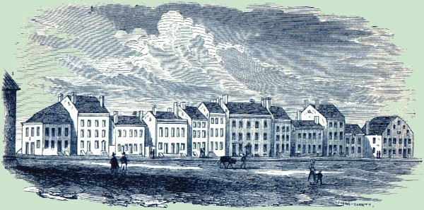

|

View of the west side of Market Street from the old Dutch Reformed church north to Maiden Lane in about 1805. The twelve buildings on the this half of the block shown above are from left to right: Robinson's Corner; house and store of John G. Van Schaick; store of David Waters; home of David Newland; home of Elbert Willett; the tall building was the Bank of Albany; large home of John Maley; Abraham R. Ten Eyck's book store; large chimney home of Peter Douw; Barent G. Staats; small home of Teunis Van Vechten; double house of Richard Lush and John Brinkerhoff's hardware store. The streetscape shown above is a continuation of a view of the east side of Market Street from the Lush-Brinkerhoff house north to Maiden Lane about 1805. North from the Lush-Brinkerhoff house was the home of John Meads; then the house of Martin Beekman; then the house of John Jacob Lansing; the tall building belonged to Barent Bleecker; the old Dutch-style building next door was occupied by General John H. Wendell. The double house and offices of Stephen Lush and his father-in-law, Dr. Samuel Stringer were bounded by the homes of Andrew Brown, Dudley Walsh, and baker Sanders Lansing. The large home partially obscured by the tree belonged to Chancellor John Lansing. This streetscape is further described in an online transcription. Streetscapes from an engraving printed in The Bicentennial History of Albany, page 671. The image is part of a set of engravings of buildings along North Market Street patterned on the work of James Eights. The house of Martin Beekman" reference poses an identification problem for us. At this point, the only MB at risk in our study population appears to be the individual known as "Marte Beekman, Jr." who we have not yet adequately defined demographically. Home | Site Index | Navigation | Email | New York State Museum posted 08/30/02; last updated 2/12/16 |